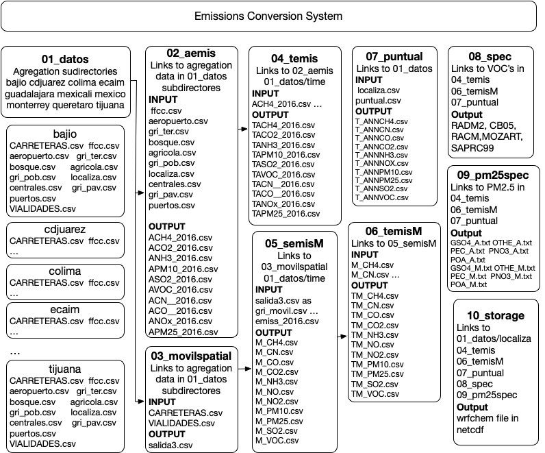

|
Diete2016
3.0
Emissions conversion system from National Emissions Inventory to model ready inventory
|
National Emissions Inventory 2016 is converted in order to be used in air quality modeling. The data has a spatial resolution at municipality level and annual emissions and it is set into a regular grid.
It can process all the country or a preselected area from:
| 9 km grid | 3 km grid | 1 km grid | Description |
|---|---|---|---|
| mexico9 | mexico | All the country | |
| jalisco | guadalajara | State and city | |
| monterrey3 | monterrey | Saltillo-MTY, MTY | |
| ecaim3 | ecaim | Central Mexico | |
| bajio3 | bajio | Guanajuato State | |
| queretaro | Queretaro State | ||
| cdjuarez | Juarez City, Chi | ||
| tijuana | Tijuana City, BC | ||
| mexicali | Mexicali City, BC | ||
| colima | Colima state |
01_datos Information for each area containing the grid, surrogates for area emissions a subdirectorieschem with chemical profiles for gases and particles, scaling factor file for each mechanism.emis with area, mobile and point emissions at municipality level.time with temporal distribution files,Sources source codes for processing the EI2016area_espacial.F90, atemporal.F90, agg_a.F90, pm25_speci_a.F90agrega.F90, suma_carretera.F90 suma_vialidades.F90, movil_spatial.F90, movil_temp.F90, agg_m.F90 andpm25_speci_m.F90t_puntal.F90, agg_p.F90, pm25_speci_p.F90g_emis2.F90agg_mod.F90, e_pm25_mod.F90, master_mod.F9012_cmaq CBMV mechanism for CMAQ modeltestsuite code for testing subroutines and functions.inventario output subdirectoryconfiguremakemake installemis_2016.sh script for running a Tijuana case1. Descripción del proceso de conversión de emisiones
A. Directorio 01_datos
B. Subdirectorio 01_datos/time
C. Directorio emis/area
D. Directorio emis/movil
E. Directorio emis/punt
F. Directorio tmp[area]
G. Directorio tmp[area] moviles
H. Directorio tmp[area]/dia[dia]
I. Emisiones de área ditribucion temporal
J. Emisiones moviles ditribucion temporal
K. Especiacion gases
L. Especiacion partículas
M. Directorio Inventario/[area]
2. Proceso de ejecución
Annex 1. Tamaño de salidas
La conversión de inventario de emisiones a un inventario útil para modelación se realiza en diferentes pasos que se muestran en la ilustración 1 cada uno de estos pasos es un subdirectorio dentro del directorio principal.

Figura 1 Esquema general de la conversión de emisiones para modelación de calidad del aire
En este directorio se encuentra los subdirectorios de cada una de las áreas del inventario, y de datos de empleados para la distribución temporal. Las áreas que considera son las siguientes:
Cada uno de estos subdirectorios contiene los archivos para la distribución espacial de las emisiones en la malla que considera el área de estudio correspondiente, los archivos que contiene se describen a continuación:
La fracción en cada celda es relativa al municipio de donde se encuentra, así si en la celda se tienen 100 m^2 de área agrícola y en el municipio hay 1000 m^2 en la fracción correspondiente a la celda se tendría un valor de 0.1 (100/1000).
En el caso de población el se tiene que para cada celda se tiene tres categorías: población urbana, rural y la suma de ambas. La proporción es con base a la población del municipio para cada categoría.
Cada archivo posee las siguientes columnas:
En el directorio time contiene los siguientes archivos:
Cada archivo posee un encabezado la primera columna corresponde al SCC (para el caso de temporal_01.txt) y los valores en las siguientes columnas muestran el identificador del perfil anual, semanal y diario. En el temporal_mon.txt se tiene el identificador anual y luego 13 valores enteros, que representan los valores de emisión mensuales y el último es la suma de lo 12 anteriores, para obtener la fracción de emisión de enero se divide el entero de la segunda columna sobre el valor de la columna 13. En el caso de temporal_week.txt se tiene en el identificador semanal en la primer columna y ocho columnas con números enteros donde el numero de la segunda columna es del lunes y el último es la suma de los siete anteriores. La fracción temporal del lunes se obtiene de dividir el valor de la segunda columna con el último. El archivo temporal_wkday.txt la primera columna es el identificador del perfil diario y las 25 columnas siguientes son el valor horario siendo la última la suma de las 24 anteriores. Para obtener la fracción de tiempo de la primera hora se divide el valor de la segunda columna sobre el valor de la columna 26.
La información de este directorio es utilizada para el proceso de distribución espacial y temporal.
los directorios adicionales contienen el inventario de emisiones de fuentes de área distribuido por contaminante, que son:
Cada uno de estos archivos contiene por reglón el identificador de municipio CVENTMUN y el código de clasificación de emisiones SCC en cada columna. Asi se tienen 2459 reglones correspondientes a cada municipio del país.
En este directorio se agrupan las fracciones de superficie de área de carreteras y de vialidades en un solo archivos (salida3.csv) que se empela para la distribución de emisiones vehiculares.
Contiene las emisiones de fuentes fijas , en el archivo de emisiones Puntual2016.csv
Correspondientes a cada contaminante y para el caso de PM2.5 y VOC se incluye una columna con el código SCC que se emplea para la especiación química.
[area] es el área a donde se requiere la emisión (p.e. para tijuana, seria tmptijuana) En este se generan todos los archivos necesarios del inventario distribuido espacial:
Para las emisiones de área una vez que se ha realizado el proceso de distribución espacial se generan los archivos con las emisiones distribuidas en la región, que son los siguientes:
ACH4_2016.csv ACO__2016.csv ANH3_2016.csv APM10_2016.csv ASO2_2016.csv ACN__2016.csv ACO2_2016.csv ANOx_2016.csv APM25_2016.csv AVOC_2016.csv
La distribución espacial de las emisiones de fuentes móviles, emplea el archivo de distribución de vialdiades (salida3.csv) y el de emisiones emiss_2016.csv donde la primer columna es el identificador de municipio CVENMUN, la segunda el código de emisión SCC y las subsecuentes son los compuestos emitidos: VOC, CO, NO, NO2, NH3, PM10, PM2.5, CN, CO2, SO2 y CH4. Una vez ejecutado el programa MSpatial.exe se obtienen los archivos con la distribución espacial de las emisiones:
M\_CH4.csv, M\_CN.csv, M\_CO2.csv, M\_CO.csv, M\_NH3.csv, M\_NO2.csv M\_NO.csv, M\_PM10.csv, M\_PM25.csv, M\_SO2.csv, M\_VOC.csv
<dia> corresponde al día del mes (p.e. si dia=27 entonces el directorio sería dia27)
En este directorio se encuentran los archivos con la distribución temporal de las emisiones de fuentes de área, mediante el programa en fortran Atemporal.exe que emplea los archivos generados en tmp[area] y los que contienen los perfiles temporales, los archivos de salida que genera son:
TACH4_2016.csv TACO__2016.csv TANH3_2016.csv TAPM102016.csv TASO2_2016.csv TACN__2016.csv TACO2_2016.csv TANOx_2016.csv TAPM2_2016.csv y TAVOC_2016.csv
Correspondientes a cada contaminante y para el caso de PM2.5 y VOC se incluye una columna con el código SCC que se emplea para la especiación química.
Los archivos que corresponden a la distribución temporal de las emisiones de fuentes móviles mediante el programa Mtemporal.exe, que emplea como entrada los archivos del directorio tmp[area] y los archvios que contienen los perfiles temporales (01\_datos/time), los archivos de salida que genera son: TMCH4\_2016.csv, TMCO\_\_2016.csv, TMCOV\_2016.csv, TMNO\_\_2016.csv, TMPM102016.csv, TMSO2\_2016.csv, TMCN\_\_2016.csv, TMCO2\_2016.csv, TMNH3\_2016.csv, TMNO2\_2016.csv y TMPM2\_2016.csv.
Correspondientes a cada contaminante y para el caso de PM2.5 y COV se incluye una columna con el código SCC que se emplea para la especiación química.
En este directorio tambien contiene la especiación química de los VOC para luego agruparlos en el mecanismo químico solicitado. Emplea como entradas los archivos de emisiones de VOC del directorio tmp[area]. Los perfiles de especiacion con base al código SCC del archivo scc-profiles.txt y el del mecanismo químico que puede ser alguno de los siguientes:
Para la realización de esto se emplean tres programas, uno para cada tipo de fuente así:
spa.exe es para emisiones de áreaspm.exe para emisiones de fuentes móvilesspp.exe para emisiones de fuentes fijasLas salidas de este programa inician con el correspondiente nombre del mecanismo en mayúsculas seguido de un guión y la abreviatura de la categoría de emisión, seguido de un guión bajo para terminar con el tipo de fuente A – área, M- móvil y P- puntual. Todos son archivos de texto (.txt)
Un ejemplo del mecanismo RADM2 seria para fuentes de área:
RADM-2_ALD_A.txt RADM-2_GLY_A.txt RADM-2_HCHO_A.txt RADM-2_MGLY_A.txt RADM-2_OLT_A.txt RADM-2_XYL_A.txt RADM-2_CH4_A.txt RADM-2_HC3_A.txt RADM-2_ISO_A.txt RADM-2_MVK_A.txt RADM-2_ORA1_A.txt RADM-2_CSL_A.txt RADM-2_HC5_A.txt RADM-2_KET_A.txt RADM-2_OL2_A.txt RADM-2_ORA2_A.txt RADM-2_ETH_A.txt RADM-2_HC8_A.txt RADM-2_MACR_A.txt RADM-2_OLI_A.txt RADM-2_TOL_A.txt
Fuentes móviles:
RADM-2_ALD_M.txt RADM-2_GLY_M.txt RADM-2_HCHO_M.txt RADM-2_MGLY_M.txt RADM-2_OLT_M.txt RADM-2_XYL_M.txt RADM-2_CH4_M.txt RADM-2_HC3_M.txt RADM-2_ISO_M.txt RADM-2_MVK_M.txt RADM-2_ORA1_M.txt RADM-2_CSL_M.txt RADM-2_HC5_M.txt RADM-2_KET_M.txt RADM-2_OL2_M.txt RADM-2_ORA2_M.txt RADM-2_ETH_M.txt RADM-2_HC8_M.txt RADM-2_MACR_M.txt RADM-2_OLI_M.txt RADM-2_TOL_M.txt
Fuentes puntuales:
RADM-2_ALD_P.txt RADM-2_GLY_P.txt RADM-2_HCHO_P.txt RADM-2_MGLY_P.txt RADM-2_OLT_P.txt RADM-2_XYL_P.txt RADM-2_CH4_P.txt RADM-2_HC3_P.txt RADM-2_ISO_P.txt RADM-2_MVK_P.txt RADM-2_ORA1_P.txt RADM-2_CSL_P.txt RADM-2_HC5_P.txt RADM-2_KET_P.txt RADM-2_OL2_P.txt RADM-2_ORA2_P.txt RADM-2_ETH_P.txt RADM-2_HC8_P.txt RADM-2_MACR_P.txt RADM-2_OLI_P.txt RADM-2_TOL_P.txt
Este directorio contiene los archivos con la especiación de PM2.5 emplea los archivos de emisiones de PM2.5 generados despues de la distribución espacial. Los perfiles de especiacion con base al código SCC del archivo scc-profile_pm25.csv y del especiación pm25_profiles.csv. Se emplean tres programas, uno para cada tipo de fuente asi:
Las salidas de este programa inician con la abreviatura correspondiente a la categoria de partícula:
Se obtienen los siguientes archivos de salida para fuentes de área:
GSO4_A.txt OTHE_A.txt PEC_A.txt PNO3_A.txt POA_A.txt
Fuentes móviles
GSO4_M.txt OTHE_M.txt PEC_M.txt PNO3_M.txt POA_M.txt
Y fuentes fijas:
GSO4_P.txt OTHE_P.txt PEC_P.txt PNO3_P.txt POA_P.txt
En este se crea el archivo de salida en formato netcdf con los archivos generados en los procesos anteriores. Se ejecuta el programa emiss.exe que tiene como salida el archivo correspondiente al área y mecanismos seleccionados así tenemos como ejemplos para Cd Juárez y Mexicali con el mecanismo RADM2 y para abril 30 del 2016:
wrfchemi_d01_radm2_cdjuarez_2016-04-30_00:00:00 wrfchemi_d01_radm2_mexicali_2016-04-30_00:00:00
En el directorio principal emis_2016 se edita el script emis_2016.sh
# Selecciona area de modelacion # bajio bajio3 cdjuarez colima ecacor ecaim ecaim3 # guadalajara jalisco mexicali mexico mexico9 # monterrey monterrey3 queretaro tijuana # dominio= 'ecaim'
HacerArea=0 si es la primera vez que se corre el área . y HacerArea=0 misma área diferente fecha. HacerArea=1
model = 0 para WRF y =1 para CHIMERE # Los mecanismos a usar cbm04 cbm05 mozart racm2 radm2 saprc99 saprc07 ghg # MECHA=radm2 model =0
# Cambiar aqui la fecha mes=5 dia=9 dia2=9
Se selecciona el día inicial dia y final dia2. Se selecciona el año en la variable nyear.
# Aqui cambiar el año a modelar
#
nyear=2016
#
nfile # Si se desea un archivo de 24 hrs nfile=1 # dos archivos de 12 hrs nfile=2 nfile=2
lsummer de .true. a .false. en el scrip functions.sh en donde aparece linea 53.inventario/[area] La siguiente tabla muestra el tamaño de las salidas para cada área considerando sólo un día del año.
| Área | Tamaño |
|---|---|
| Bajío | 1.6 GB |
| Cd Juárez | 51 MB |
| Colima | 333 MB |
| Centro de México (Ecaim) | 2.4 GB |
| Guadalajara | 59 MB |
| Mexicali | 141 MB |
| Monterrey | 176 MB |
| México | 22 GB |
| Tijuana | 42 MB |
[1]: La superficie de bosque representa todo tipo de vegetación en la celda que no es agrícola.
El sistema puede generar las salidas en el formato para el modelo CHIMERE cambios son:
1.8.18